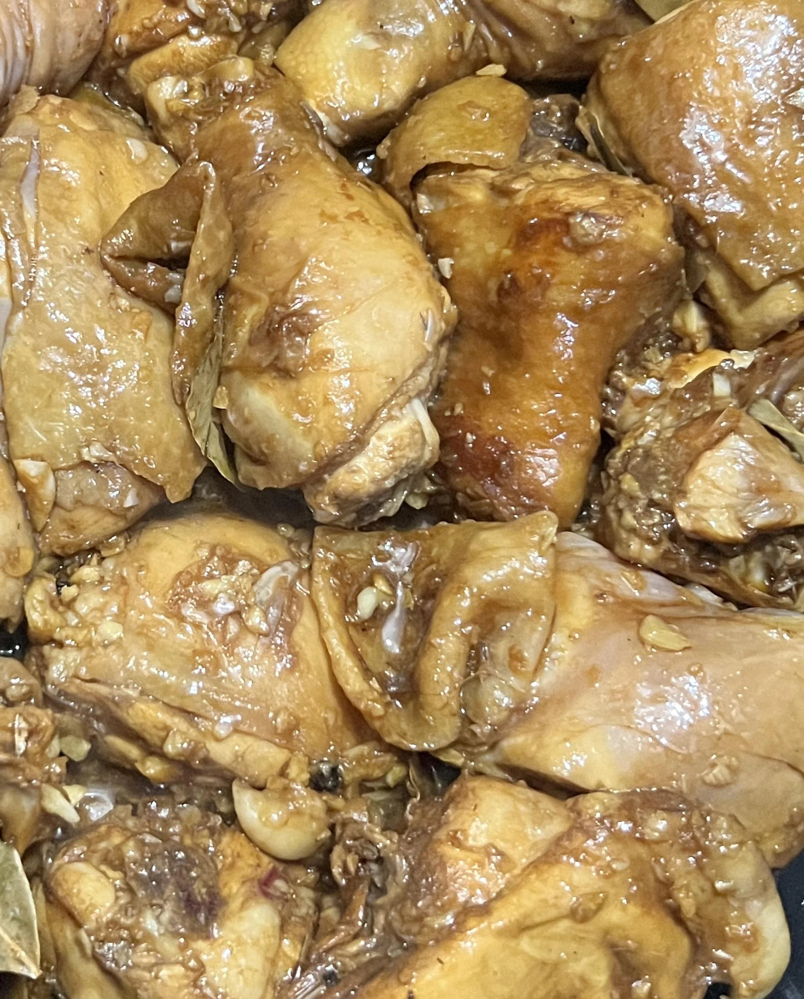

Adobong Manacc

Hi! Ako po si Travis Kraft. Welcome sa kusina ko. Ngayon magluluto tayo ng, Adobong Manok.
Ingredients
- 4 piraso ng manacc
- Bawang
- Sibuyas
- Dahon ng Laurel
- Mantika
- Suka
- Toyo
- Paminta
Steps
- Painitin ang kawali.
- Hiwain nang maliliit ang bawang.
- Hiwain nang maliliit ang sibuyas.
- Lagyan ng kaunting mantika.
- Ilagay ang bawang hangang maging golden-brown
- Ihalo ang sibuyas.
- Ilagay ang manacc
- Sangkutchahin
- Ilagay ang dahon ng laurel.
- Ilagay ang suka at toyo, haluin at takpan
- Haayang kumulo ng 10-15 minutes hangang maabsorb ng manok ang sangkap.
- Patayin ang kalan.
- Lagyan ng kaunting mantika.
Home